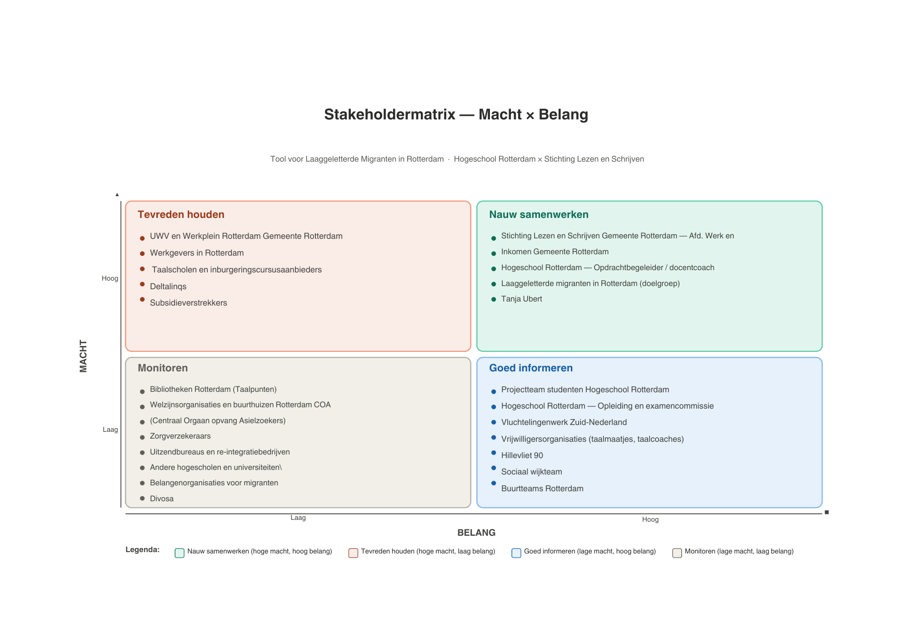

Periode
Periode
Week 3-5
5-18 maart 2026
De eerste stap in onze sprint: desk research inzichten, ontwerpvraag, pact-analyse en stakeholdermap.
 Periode
Periode
Week 3-5
5-18 maart 2026
 Focus
Focus
Onderzoek
User research & analyse
Hoe kunnen we laaggeletterde migranten, tussen de 25 en 45 jaar, ondersteunen bij het sollicitatieproces?
In deze sprint willen wij onderzoek doen naar laaggeletterdheid en binnen dit onderwerp een specifiek probleem kiezen om verder te onderzoeken.

We zijn de sprint begonnen met interviews. Op hillevliet zijn we allemaal opgesplitst en hebben we vragen voorbereid en gevraagd aan de praktijkpartners. Hier kwam uit dat... ??? IDK MAAK AF
We zijn begonnen met deskresearch. Hiervoor hebben we twaalf deelvragen opgesteld over verschillende onderwerpen binnen laaggeletterdheid. Ieder teamlid heeft twee deelvragen onderzocht. Met dit onderzoek wilden we basiskennis opdoen over laaggeletterdheid en de verschillende problemen waar deze doelgroep mee te maken heeft. Vervolgens hebben we onze bevindingen met elkaar gedeeld, zodat we als team konden bepalen op welk onderwerp binnen laaggeletterdheid we ons tijdens dit project wilden richten.
Deelvragen:
Op de workshop van maandag 9 maart hebben we een workshop gehad over hoe we de waarden van directe en indirecte stakeholders in kaart kunnen brengen, waardeconflicten die kunnen onstaan, hoe we deze kunnen balanceren en hoe we deze waarden kunnen omzetten naar ontwerprichtlijnen.

Voor dit project is een stakeholderanalyse uitgevoerd in de vorm van een macht-belangenmatrix. Hiermee zijn de verschillende betrokken partijen ingedeeld op basis van hun invloed op het project en hun interesse in de uitkomst. Belangrijke stakeholders zijn onder andere laaggeletterde werkzoekenden, taalscholen zoals NLtraining, initiatieven voor laaggeletterden, werkgevers, het UWV en overheidsinstanties. De analyse hielp ons bepalen hoe we met de verschillende stakeholders moesten omgaan, bijvoorbeeld door hen actief te betrekken, goed te informeren of tevreden te houden gedurende het project.

Reint is van Stichting Lezen en Schrijven. Hij had ons afgewezen als praktijkpartner, maar we mochten een gesprek bijwonen van een ander groepje en daar ook onze eigen vragen stellen. Tijdens het gesprek hebben we meer inzicht gekregen in de uitdagingen waar laaggeletterden mee te maken hebben. We leerden onder andere dat er al veel ondersteuning beschikbaar is, maar dat deze vaak niet wordt gebruikt door schaamte of omdat mensen niet weten dat de hulp bestaat. Daarnaast kregen we meer informatie over de problemen die laaggeletterden ervaren tijdens het sollicitatieproces en hoe bestaande hulpmiddelen worden gebruikt. Ook werd duidelijk dat leren een belangrijk onderdeel van onze oplossing moest worden, omdat mensen die eenmaal beginnen met lessen deze vaak blijven volgen. Verder leerden we hoe belangrijk toegankelijkheid, eenvoud en een goede balans tussen tekst, geluid en beelden zijn bij het ontwerpen van een product voor deze doelgroep.
Tijdens sprint 1 hebben we een gesprek gehad met Tanja Ubert. Zij is een hogeschooldocent op de Hogeschool Rotterdam en voor haar bordspel Living Without Letters komt ze vaak in contact met laaggeletterden. Tijdens dit gesprek hebben we het gehad over hoe laaggeletterden leven, hoe zij de arbeidsmarkt zien en het verschil tussen moedertaal- en niet-moedertaalsprekers. Wat we vooral hebben geleerd is dat leven onder te lezen mogelijk is door de omgeving goed te onthouden en door hulp te vragen, waardoor laaggeletterdheid onzichtbaar lijkt. Binnen NT2-groep leven mensen echter vooral in kleine en strikte sociale regels met weinig externe contacten, waaronder vrouwen die in hun herkomstland geen onderwijs mochten volgen. Hierdoor is het vinden van hulp voor hen een stuk moeilijker.